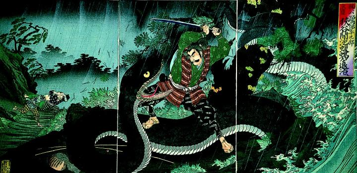

川岸にいる巨大な蝮蝎。緑色で、胴の太さは木の幹ほどもある。川の中から出現し、尾を木に巻き付けている。鷺池平九郎に踏みつけられている。
著作者：楊斎延一／出典：親書誌：A5_pushkin_0040：鷺池平九郎狭谷間池蝮蝎を退治ス；サギノイケヘイクロウサヤマイケクチナワヲタイジス／日付：2011／資源識別子：A5_pushkin_0040_0001_0000
Copyright (c)2010- International Research Center for Japanese Studies, Kyoto, Japan. All rights reserved.